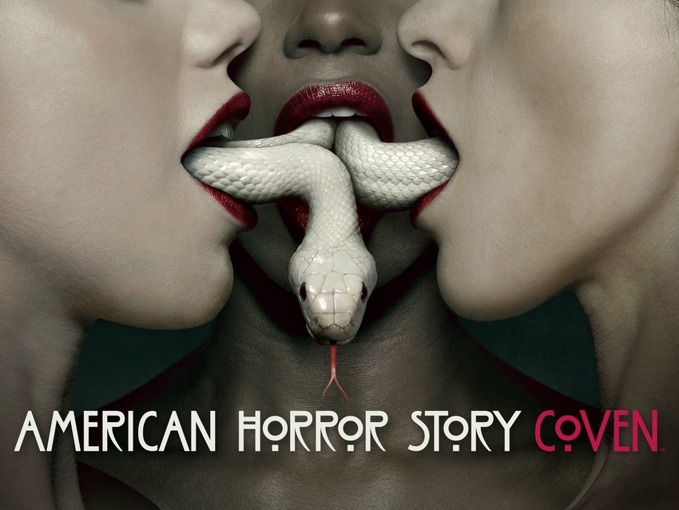

COVEN

TRAMA
La temática de la historia es acerca de la brujería. Se sitúa en 2013, con flashbacks del siglo XIX. Cuando la familia de Zoe Benson (Taissa Farmiga) descubre que tiene habilidades diferentes es enviada a Miss Robicheaux's Academy, instituto que presenta una crisis debido a la posible extinción de las descendientes de Salem, donde encuentra a tres jóvenes brujas más, la caprichosa y vanidosa Madison Montgomery (Emma Roberts), Queenie (Gabourey Sidibe), una muñeca vudú humana, y Nan (Jamie Brewer), que tiene clarividencia. Cordelia Foxx (Sarah Paulson), directora del instituto y su madre Fiona Goode (Jessica Lange), bruja Suprema del aquelarre (la más poderosa). Hacen lo posible por mantener su linaje en pie, luchando contra sus enemigos, los cazadores de brujas y la reina Vudú Marie Laveau (Angela Bassett). Mientras que Fiona, en la búsqueda de sus intereses personales se encuentra con la sádica racista Delphine LaLaurie (Kathy Bates), inmortal debido a un hechizo Vudú desde el siglo XIX por culpa de Laveau. La historia se complica con los intentos de la bruja fanática de la moda y líder del Consejo de brujas Myrtle Snow (Frances Conroy) de sacar a flote las perversas intenciones de Fiona, así como también la llegada de la resucitada bruja del pantano Misty Day (Lily Rabe). Sus temas principales son la opresión y sobre usar todo el potencial que tenemos, así como también la necesidad de reconocer y pertenecer a una "tribu".
EPISODIOS
- Brujería
- Partes de Chicos
- Reemplazos
- Bromas Aterradoras
- ¡Arde, Bruja, Arde!
- La Llegada del Hachero
- Los muertos
- La Rendición Sagrada
- La Cabeza
- Los Placeres Mágicos de Stevie Nicks
- Proteger el Aquelarre
- Vete al Infierno
- Las Siete Maravillas
REPARTO
- Sarah Paulson como Cordelia Foxx
- Taissa Farmiga como Zoe Benson
- Frances Conroy como Myrtle Snow
- Evan Peters como Kyle Spencer
- Lily Rabe como Misty Day
- Emma Roberts como Madison Montgomery
- Denis O'Hare como Spalding